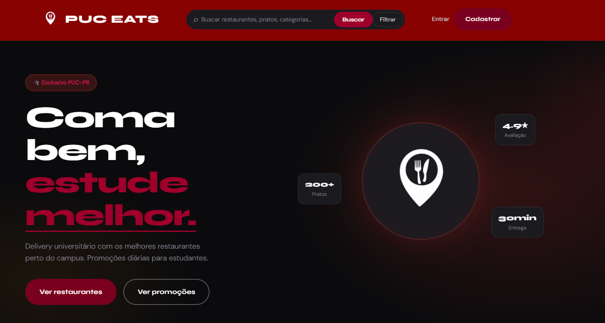
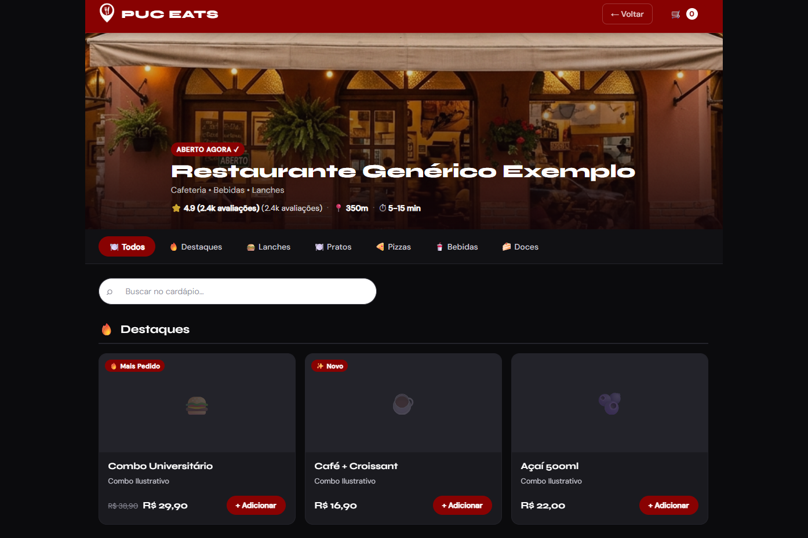
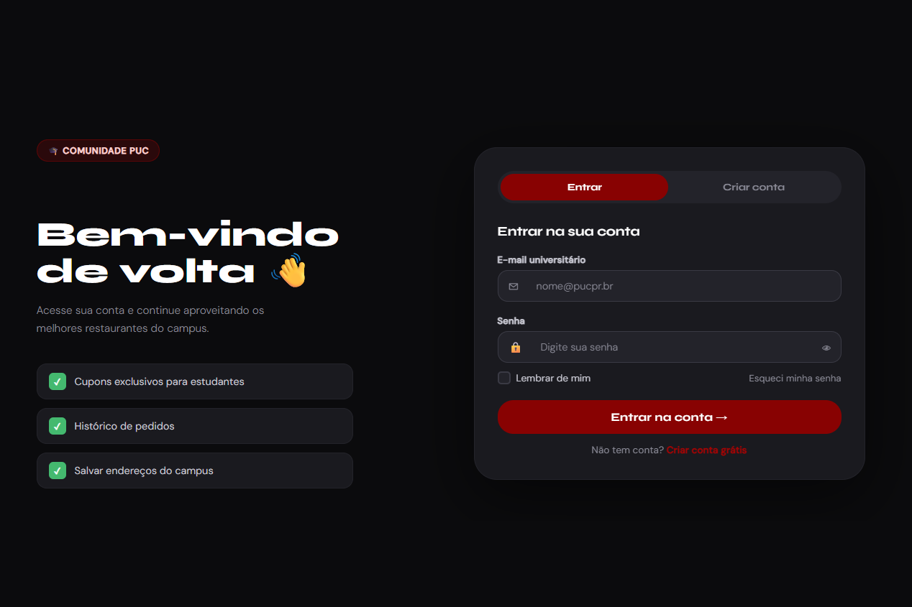

PucEats
Front-end · 2026
Em equipe, cinco pessoas
Faculdade

O problema
Um delivery inteiro rodando no navegador: buscar, montar o carrinho, fechar o pedido. Sem framework, e isso foi escolha nossa. O exercício era mexer em DOM, evento e armazenamento local na mão.
O que construí
Quatro páginas: a home com catálogo e recomendações, o cardápio em modal, a listagem completa com busca e a autenticação.
O carrinho fica no localStorage, então o pedido sobrevive ao reload. É a Web Storage API fazendo o trabalho que seria de um back-end.
A busca filtra a lista conforme a pessoa digita, sem ida ao servidor.
Parte do código e das telas saiu com apoio de IA.
Feito com Rauhan Kniess, Eduardo Lopes, Gabriel Men e Ruan Eduardo Yamaguchi.
Stack
HTML
CSS
JavaScript
localStorage
Resultado
Pedido montado e mantido, sem back-end

